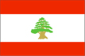

{kind=link}


![[Country map of Lebanon]](../maps/le-map.jpg)
| Lebanon |  |
|
|
|
|
| Introduction |
Background: Lebanon has made progress toward rebuilding its political institutions and regaining its national sovereignty since 1991 and the end of the devastating 16-year civil war. Under the Ta'if Accord - the blueprint for national reconciliation - the Lebanese have established a more equitable political system, particularly by giving Muslims a greater say in the political process while institutionalizing sectarian divisions in the government. Since the end of the war, the Lebanese have conducted several successful elections, most of the militias have been weakened or disbanded, and the Lebanese Armed Forces (LAF) have extended central government authority over about two-thirds of the country. Hizballah, the radical Shi'a party, retains its weapons. Foreign forces still occupy areas of Lebanon. Israel maintains troops in southern Lebanon and continues to support a proxy militia, the Army of South Lebanon (ASL), along a narrow stretch of territory contiguous to its border. Syria maintains about 25,000 troops in Lebanon based mainly in Beirut, North Lebanon, and the Bekaa Valley. Syria's troop deployment was legitimized by the Arab League during Lebanon's civil war and in the Ta'if Accord. Damascus justifies its continued military presence in Lebanon by citing the continued weakness of the LAF, Beirut's requests, and the failure of the Lebanese Government to implement all of the constitutional reforms in the Ta'if Accord.
| Geography |
Location: Middle East, bordering the Mediterranean Sea, between Israel and Syria
Geographic coordinates: 33 50 N, 35 50 E
Map references: Middle East
Area:
total:
10,400 sq km
land:
10,230 sq km
water:
170 sq km
Area - comparative: about 0.7 times the size of Connecticut
Land boundaries:
total:
454 km
border countries:
Israel 79 km, Syria 375 km
Coastline: 225 km
Maritime claims:
territorial sea:
12 nm
Climate: Mediterranean; mild to cool, wet winters with hot, dry summers; Lebanon mountains experience heavy winter snows
Terrain: narrow coastal plain; Al Biqa' (Bekaa Valley) separates Lebanon and Anti-Lebanon Mountains
Elevation extremes:
lowest point:
Mediterranean Sea 0 m
highest point:
Qurnat as Sawda' 3,088 m
Natural resources: limestone, iron ore, salt, water-surplus state in a water-deficit region, arable land
Land use:
arable land:
21%
permanent crops:
9%
permanent pastures:
1%
forests and woodland:
8%
other:
61% (1993 est.)
Irrigated land: 860 sq km (1993 est.)
Natural hazards: dust storms, sandstorms
Environment - current issues: deforestation; soil erosion; desertification; air pollution in Beirut from vehicular traffic and the burning of industrial wastes; pollution of coastal waters from raw sewage and oil spills
Environment - international agreements:
party to:
Biodiversity, Climate Change, Desertification, Hazardous Wastes, Law of the Sea, Marine Dumping, Nuclear Test Ban, Ozone Layer Protection, Ship Pollution, Wetlands
signed, but not ratified:
Environmental Modification, Marine Dumping, Marine Life Conservation
Geography - note: Nahr al Litani only major river in Near East not crossing an international boundary; rugged terrain historically helped isolate, protect, and develop numerous factional groups based on religion, clan, and ethnicity
| People |
Population: 3,578,036 (July 2000 est.)
Age structure:
0-14 years:
28% (male 508,936; female 489,122)
15-64 years:
65% (male 1,115,457; female 1,226,448)
65 years and over:
7% (male 108,706; female 129,367) (2000 est.)
Population growth rate: 1.38% (2000 est.)
Birth rate: 20.26 births/1,000 population (2000 est.)
Death rate: 6.42 deaths/1,000 population (2000 est.)
Net migration rate: 0 migrant(s)/1,000 population (2000 est.)
Sex ratio:
at birth:
1.05 male(s)/female
under 15 years:
1.04 male(s)/female
15-64 years:
0.91 male(s)/female
65 years and over:
0.84 male(s)/female
total population:
0.94 male(s)/female (2000 est.)
Infant mortality rate: 29.3 deaths/1,000 live births (2000 est.)
Life expectancy at birth:
total population:
71.25 years
male:
68.87 years
female:
73.74 years (2000 est.)
Total fertility rate: 2.08 children born/woman (2000 est.)
Nationality:
noun:
Lebanese (singular and plural)
adjective:
Lebanese
Ethnic groups: Arab 95%, Armenian 4%, other 1%
Religions: Muslim 70% (5 legally recognized Islamic groups - Shi'a, Sunni, Druze, Isma'ilite, Alawite or Nusayri), Christian 30% (11 legally recognized Christian groups - 4 Orthodox Christian, 6 Catholic, 1 Protestant), Jewish NEGL%
Languages: Arabic (official), French, English, Armenian widely understood
Literacy:
definition:
age 15 and over can read and write
total population:
86.4%
male:
90.8%
female:
82.2% (1997 est.)
| Government |
Country name:
conventional long form:
Lebanese Republic
conventional short form:
Lebanon
local long form:
Al Jumhuriyah al Lubnaniyah
local short form:
Lubnan
Data code: LE
Government type: republic
Capital: Beirut
Administrative divisions: 5 governorates (mohafazat, singular - mohafazah); Beyrouth, Ech Chimal, Ej Jnoub, El Bekaa, Jabal Loubnane
Independence: 22 November 1943 (from League of Nations mandate under French administration)
National holiday: Independence Day, 22 November (1943)
Constitution: 23 May 1926, amended a number of times
Legal system: mixture of Ottoman law, canon law, Napoleonic code, and civil law; no judicial review of legislative acts; has not accepted compulsory ICJ jurisdiction
Suffrage: 21 years of age; compulsory for all males; authorized for women at age 21 with elementary education
Executive branch:
chief of state:
President Emile LAHUD (since 24 November 1998)
head of government:
Prime Minister Salim al-HUSS (since 4 December 1998)
cabinet:
Cabinet chosen by the prime minister in consultation with the president and members of the National Assembly; the current Cabinet was formed in 1998
elections:
president elected by the National Assembly for a six-year term; election last held 15 October 1998 (next to be held NA 2004); prime minister and deputy prime minister appointed by the president in consultation with the National Assembly; by custom, the president is a Maronite Christian, the prime minister is a Sunni Muslim, and the speaker of the legislature is a Shi'a Muslim
election results:
Emile LAHUD elected president; National Assembly vote - 118 votes in favor, 0 against, 10 abstentions
Legislative branch:
unicameral National Assembly or Majlis Alnuwab (Arabic) or Assemblee Nationale (French) (128 seats; members elected by popular vote on the basis of sectarian proportional representation to serve four-year terms)
elections:
last held 18 August-15 September 1996 (next to be held NA 2000)
election results:
percent of vote by party - NA; seats by party - NA (one-half Christian and one-half Muslim)
Judicial branch: four Courts of Cassation (three courts for civil and commercial cases and one court for criminal cases); Constitutional Council (called for in Ta'if Accord) rules on constitutionality of laws; Supreme Council (hears charges against the president and prime minister as needed)
Political parties and leaders: political party activity is organized along largely sectarian lines; numerous political groupings exist, consisting of individual political figures and followers motivated by religious, clan, and economic considerations
International organization participation: ABEDA, ACCT, AFESD, AL, AMF, CCC, ESCWA, FAO, G-24, G-77, IAEA, IBRD, ICAO, ICC, ICFTU, ICRM, IDA, IDB, IFAD, IFC, IFRCS, ILO, IMF, IMO, Inmarsat, Intelsat, Interpol, IOC, ISO (correspondent), ITU, NAM, OAS (observer), OIC, PCA, UN, UNCTAD, UNESCO, UNHCR, UNIDO, UNRWA, UPU, WFTU, WHO, WIPO, WMO, WToO
Diplomatic representation in the US:
chief of mission:
Ambassador Dr. Farid ABBOUD
chancery:
2560 28th Street NW, Washington, DC 20008
telephone:
[1] (202) 939-6300
FAX:
[1] (202) 939-6324
consulate(s) general:
Detroit, New York, and Los Angeles
Diplomatic representation from the US:
chief of mission:
Ambassador David SATTERFIELD
embassy:
Antelias, Beirut
mailing address:
P. O. Box 70-840, Beirut; PSC 815, Box 2, FPO AE 09836-0002
telephone:
[961] (4) 543600, 542600, 544133, 544130, 544131
FAX:
[961] (4) 544136
Flag description: three horizontal bands of red (top), white (double width), and red with a green and brown cedar tree centered in the white band
| Economy |
Economy - overview: The 1975-91 civil war seriously damaged Lebanon's economic infrastructure, cut national output by half, and all but ended Lebanon's position as a Middle Eastern entrepot and banking hub. Peace has enabled the central government to restore control in Beirut, begin collecting taxes, and regain access to key port and government facilities. Economic recovery has been helped by a financially sound banking system and resilient small- and medium-scale manufacturers, with family remittances, banking services, manufactured and farm exports, and international aid as the main sources of foreign exchange. Lebanon's economy has made impressive gains since the launch of "Horizon 2000," the government's $20 billion reconstruction program in 1993. Real GDP grew 8% in 1994 and 7% in 1995 before Israel's Operation Grapes of Wrath in April 1996 stunted economic activity. Real GDP grew at an average annual rate of less than 3% per year for 1997 and 1998 and only 1% in 1999. During 1992-98, annual inflation fell from more than 100% to 5%, and foreign exchange reserves jumped to more than $6 billion from $1.4 billion. Burgeoning capital inflows have generated foreign payments surpluses, and the Lebanese pound has remained relatively stable. Progress also has been made in rebuilding Lebanon's war-torn physical and financial infrastructure. Solidere, a $2-billion firm, is managing the reconstruction of Beirut's central business district; the stock market reopened in January 1996; and international banks and insurance companies are returning. The government nonetheless faces serious challenges in the economic arena. It has had to fund reconstruction by tapping foreign exchange reserves and boosting borrowing. Reducing the government budget deficit is a major goal of the LAHUD government. The stalled peace process and ongoing violence in southern Lebanon could lead to wider hostilities that would disrupt vital capital inflows. Furthermore, the gap between rich and poor has widened in the 1990's, resulting in grassroots dissatisfaction over the skewed distribution of the reconstruction's benefits and leading the government to shift its focus from rebuilding infrastructure to improving living conditions.
GDP: purchasing power parity - $16.2 billion (1999 est.)
GDP - real growth rate: 1% (1999 est.)
GDP - per capita: purchasing power parity - $4,500 (1999 est.)
GDP - composition by sector:
agriculture:
12%
industry:
27%
services:
61% (1998 est.)
Population below poverty line: 28% (1999 est.)
Household income or consumption by percentage share:
lowest 10%:
NA%
highest 10%:
NA%
Inflation rate (consumer prices): 4.5% (1999 est.)
Labor force:
1.3 million (1999 est.)
note:
in addition, there are as many as 1 million foreign workers (1997 est.)
Labor force - by occupation: services 62%, industry 31%, agriculture 7% (1997 est.)
Unemployment rate: 18% (1997 est.)
Budget:
revenues:
$4.9 billion
expenditures:
$8.36 billion, including capital expenditures of $NA (1999 est.)
Industries: banking; food processing; jewelry; cement; textiles; mineral and chemical products; wood and furniture products; oil refining; metal fabricating
Industrial production growth rate: NA%
Electricity - production: 9.7 billion kWh (1998)
Electricity - production by source:
fossil fuel:
90.72%
hydro:
9.28%
nuclear:
0%
other:
0% (1998)
Electricity - consumption: 9.629 billion kWh (1998)
Electricity - exports: 0 kWh (1998)
Electricity - imports: 608 million kWh (1998)
Agriculture - products: citrus, grapes, tomatoes, apples, vegetables, potatoes, olives, tobacco; sheep, goats
Exports: $866 million (f.o.b., 1999 est.)
Exports - commodities: foodstuffs and tobacco, textiles, chemicals, metal and metal products, electrical equipment and products, jewelry, paper and paper products
Exports - partners: Saudi Arabia 12%, UAE 10%, France 9%, Syria 7%, US 7%, Kuwait 4%, Jordan, Turkey (1998)
Imports: $5.7 billion (f.o.b., 1999 est.)
Imports - commodities: foodstuffs, machinery and transport equipment, consumer goods, chemicals, textiles, metals, fuels, agricultural foods
Imports - partners: Italy 12%, France 10%, US 9%, Germany 9%, Switzerland 6%, Japan, UK, Syria (1998)
Debt - external: $8.8 billion (1999 est.)
Economic aid - recipient: $3.5 billion (pledges 1997-2001)
Currency: 1 Lebanese pound = 100 piasters
Exchange rates: Lebanese pounds per US$1 - 1,507.5 (January 2000), 1,507.8 (1999), 1,516.1 (1998), 1,539.5 (1997), 1,571.4 (1996), 1,621.4 (1995)
Fiscal year: calendar year
| Communications |
Telephones - main lines in use: 330,000 (1995)
Telephones - mobile cellular: 120,000 (1995)
Telephone system:
telecommunications system severely damaged by civil war; rebuilding well underway
domestic:
primarily microwave radio relay and cable
international:
satellite earth stations - 2 Intelsat (1 Indian Ocean and 1 Atlantic Ocean) (erratic operations); coaxial cable to Syria; microwave radio relay to Syria but inoperable beyond Syria to Jordan; 3 submarine coaxial cables
Radio broadcast stations: AM 20, FM 22, shortwave 4 (1998)
Radios: 2.85 million (1997)
Television broadcast stations: 28 (1997)
Televisions: 1.18 million (1997)
Internet Service Providers (ISPs): 19 (1999)
| Transportation |
Railways:
total:
399 km (mostly unusable because of damage in civil war)
standard gauge:
317 km 1.435-m
narrow gauge:
82 km (1999)
Highways:
total:
7,300 km
paved:
6,200 km
unpaved:
1,100 km (1999 est.)
Pipelines: crude oil 72 km (none in operation)
Ports and harbors: Antilyas, Batroun, Beirut, Chekka, El Mina, Ez Zahrani, Jbail, Jounie, Naqoura, Sidon, Tripoli, Tyre
Merchant marine:
total:
68 ships (1,000 GRT or over) totaling 346,029 GRT/536,861 DWT
ships by type:
bulk 8, cargo 44, chemical tanker 1, combination bulk 1, combination ore/oil 1, container 4, livestock carrier 4, roll-on/roll-off 2, vehicle carrier 3 (1999 est.)
Airports: 9 (1999 est.)
Airports - with paved runways:
total:
7
over 3,047 m:
1
2,438 to 3,047 m:
2
1,524 to 2,437 m:
2
914 to 1,523 m:
1
under 914 m:
1 (1999 est.)
Airports - with unpaved runways:
total:
2
914 to 1,523 m:
1
under 914 m:
1 (1999 est.)
| Military |
Military branches: Lebanese Armed Forces (LAF; includes Army, Navy, and Air Force)
Military manpower - availability:
males age 15-49:
957,729 (2000 est.)
Military manpower - fit for military service:
males age 15-49:
592,264 (2000 est.)
Military expenditures - dollar figure: $500 million (FY98)
Military expenditures - percent of GDP: 4% (FY98)
| Transnational Issues |
Disputes - international: Israeli troops in southern Lebanon since June 1982; Syrian troops in northern, central, and eastern Lebanon since October 1976
Illicit drugs: inconsequential producer of hashish; some heroin processing mostly in the Bekaa valley; a Lebanese/Syrian eradication campaign started in the early 1990s has practically eliminated the opium and cannabis crops